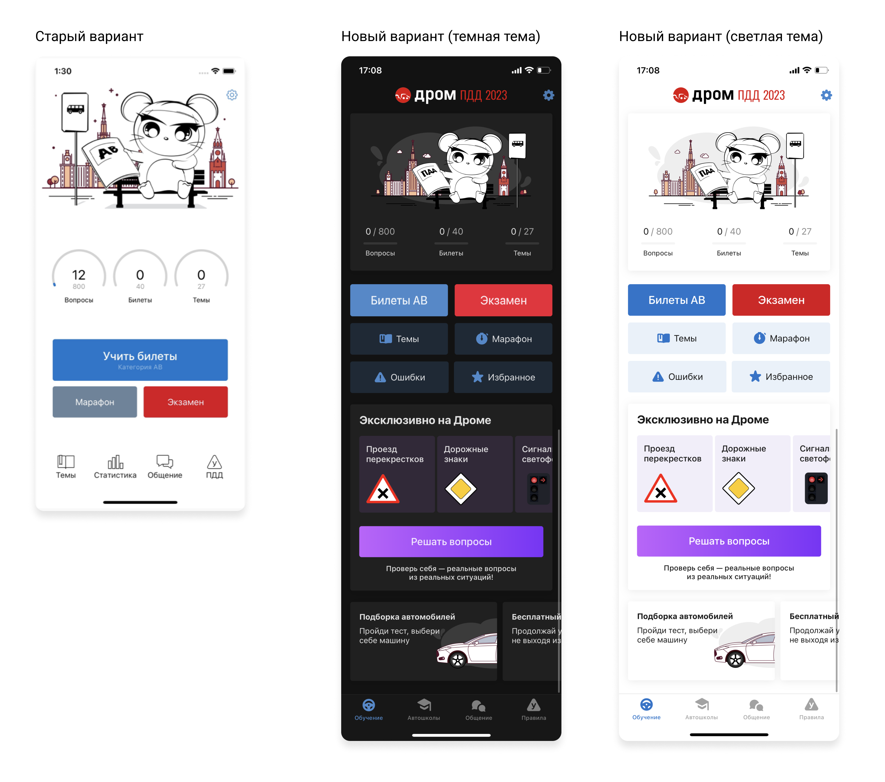
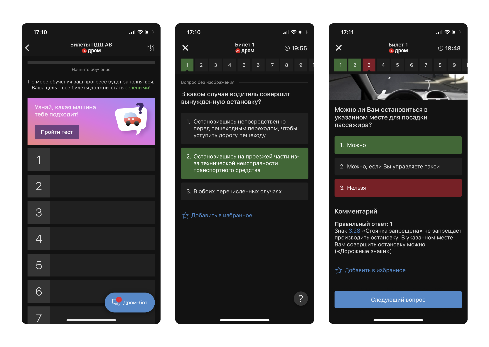
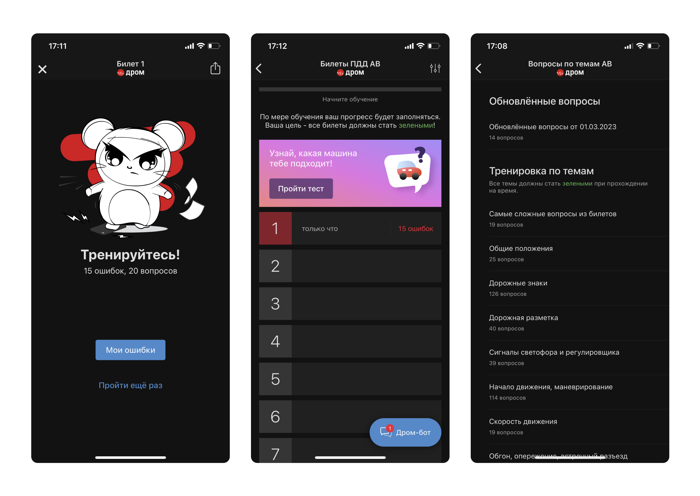
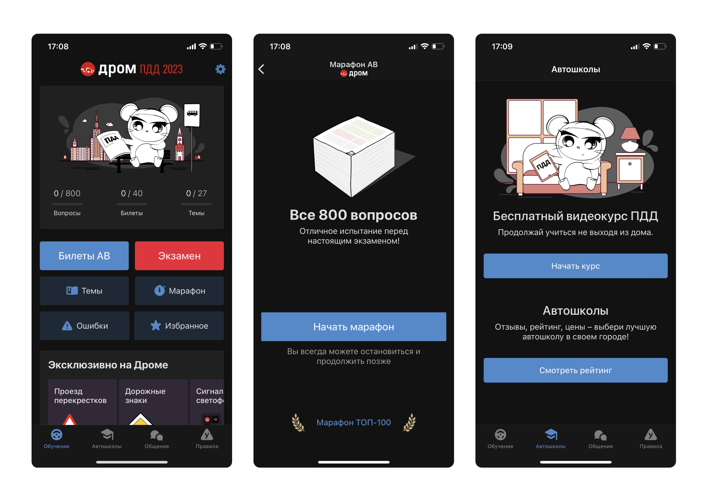

Drom PDD helps drivers learn traffic rules and pass the theory exam.
Every future driver in Russia takes the same theory exam, and this is one of the biggest apps to prepare for it: over 10 million downloads, consistently at the top of Google Play’s education charts.
App Store Google Play WebMy Role and Responsibilities
The team: a product manager, an analyst, two iOS and two Android engineers, and a QA engineer, with backend owned by a separate team.
- Redesigned the home screen of an app with over 10 million downloads, moving it from a fixed layout to a scrollable, modular one.
- Built dark mode into the design system: one color palette and one set of illustrations serving both themes.
- Adapted the mascot illustrations so the character survived the redesign and the dark theme.
- Used usage analytics to decide which learning actions stayed at the top of the new hierarchy.
- Animated UI states and the mascot with Lottie.
Home Screen Redesign
Problem
The home screen didn’t scroll: every feature had to fit one static layout. The business wanted new sections, from driving-school listings to cross-promo with other Drom products, and there was physically nowhere to put them.
One constraint was non-negotiable. The mouse mascot had become the face of the app, so any new layout had to keep the illustrations.
Solution
I redesigned the home screen as a scrollable stack of modules. Usage analytics decided the order: tickets and the exam stayed at the top, everything else moved below the fold.
A tab bar replaced the old row of icon buttons, giving new sections a permanent home instead of another button on an overcrowded screen. The mascot illustrations were adapted to work in both light and dark themes.
Outcome
- New sections shipped into the freed-up space: driving-school listings, a free video course, and cross-promo with other Drom products
- The modular layout absorbed later additions without another redesign
- The mascot kept its place in both themes

Dark Mode
Problem
Users kept asking for dark mode in store reviews and support requests. For an app people open daily over weeks of exam prep, a bright white screen was a real complaint, not a nice-to-have.
The catch: the app’s identity lived in its illustrations, and none of them were designed for a dark background.
Solution
I built dark mode at the token level: one semantic palette drives both themes, so every screen, past and future, gets dark mode without extra design work.
Illustrations and Lottie animations were adapted to read on both backgrounds from a single set of assets, and a theme switch lets users pick the mode themselves.
Outcome
- Closed the request users had been raising in reviews and support
- One asset set serves both themes, with no duplicated illustrations to maintain
- Every new feature ships with dark mode by default, at no extra design cost


